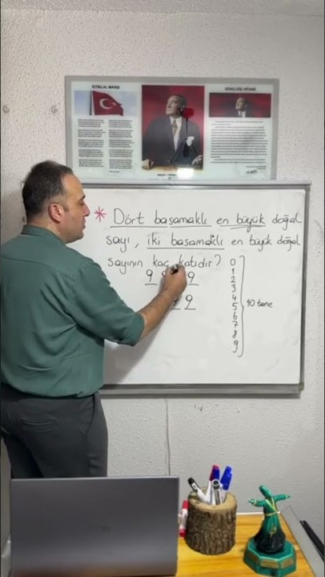

Her gönderi bir sınıfa, her sınıf bir kayda bağlansın
İçerik bugün emekle ve sezgiyle üretiliyor. Bundan sonra bir takvime, altı seriye ve tek bir görsel dile bağlanacak. Instagram vitrin olacak, TikTok yeni velilere ulaşacak, YouTube kalıcı ders arşivi olacak.
Profil: ilk üç saniyede ne yapılacağı belli olsun
Görünen ad "Hakikat Kabakçı". Biyografi uzun ve "devamı" ile kesiliyor. Bağlantı WhatsApp'a gidiyor. Öne çıkanlarda iki halka aynı adı taşıyor.
- Görünen ad "Hakikat Öğretmen" olur, aramada da böyle çıkar.
- Biyografi üç satır olur: kim, ne veriyor, şimdi ne yapmalı.
- Bağlantı sitedeki bağlantı sayfasına gider.
- Öne çıkanlar altı halkaya iner: her biri tek bir soruyu cevaplar.
- Biyografideki unvan ve deneyim bilgisi bütün kanallarda aynı yazılır.
Hakikat Öğretmen
2-5. sınıf canlı online ders · 18. yıl
Her hafta ücretsiz Soru Atölyesi PDF'i
Deneme dersi ve sınıflar için bağlantı:
onlinedersevim.com/baglanti
Örnek profil düzeni.
Altı seri, her birinin bir görevi var
Her serinin bir amacı, sabit bir biçimi ve sabit bir sıklığı olur. Konular aylık takvimde önceden onaylanır.
| Seri | Görevi | Biçim | Sıklık | Örnek konu |
|---|---|---|---|---|
| Soru Atölyesi | Listeye veli kazandırmak | Kaydırmalı gönderi + otomatik DM | Haftada 1 | 4. sınıf kesirlerde sıralama, 30 soru |
| 60 saniyede konu | Öğretmeni dersin içinde göstermek | Dikey video, tahta başında | Haftada 2 | 3. sınıfta çarpım tablosunun 9'lar hilesi |
| Veli Rehberi | Yeni velilere ulaşmak | Konuşan video + kaydırmalı özet | Haftada 1 | Karne günü çocuğa ne söylenir? |
| Sınıftan kanıt | Güven vermek | Veli yorumu, öğrenci başarısı (izinli) | 2 haftada 1 | Bir yılda okumayı seven öğrenci |
| Takvim ve kayıt | Kampa ve kayda çağırmak | Duyuru gönderisi + hikâye serisi | Sezona göre | Yarıyıl kampı kayıtları açıldı |
| Canlı buluşma | Sıcak veliyle konuşmak | Instagram canlı yayını | Ayda 1 | 4. sınıf velileriyle soru-cevap |
Şablonlar: yerleşim sabit, renk sınıfa göre
Aşağıdaki üç gönderi, kimlik sisteminin nasıl çalışacağını gösteren örnekler. Son tasarım kimlik çalışmasıyla birlikte netleşir.
 PDF için yoruma "4" yaz
PDF için yoruma "4" yaz

Kayıt: bağlantı profildeMetinler örnektir. Tarihler MEB'in yarıyıl tatili; kamp programını müşteri belirler.
Bir haftanın akışı
Paylaşım saatleri veli trafiğine göre seçilir: akşam yemeğinden sonra ve hafta sonu sabahı. İlk ayın verisinden sonra saatler yeniden ayarlanır.
Videolar aynı gün TikTok'a ve YouTube Shorts'a da yüklenir. Hikâyeler her gün paylaşılır.
Yorum ve mesajlar: hızlı ve aynı dille
Velinin sorusu bugün WhatsApp'ta, DM'de ve yorumlarda karışık geliyor. Sık sorulan sorular için onaylı bir cevap seti hazırlanır. Kayda yakın veliler WhatsApp'a ve deneme dersine yönlendirilir.
- Mesaj saatlerinde ilk cevap kısa sürede verilir. Mesaj saatleri dışında otomatik karşılama mesajı gider.
- Fiyat, taksit ve tarih soruları her zaman aynı cevabı alır. Bu cevaplar ayarlar ekranından güncellenir.
- Olumsuz yorumlar silinmez. Kısa bir cevap verilir, konuşma özel mesaja taşınır.
Her ay teslim edilenler
Aylık içerik takvimi
Konular, metinler ve yayın günleri ay başlamadan onaya gelir.
Tasarımlar
Gönderiler, hikâyeler, video kapakları ve öne çıkan kapakları şablonlarla hazırlanır.
Otomatik DM kurulumu
Her Soru Atölyesi gönderisi için anahtar kelime, mesaj ve bağlantı ayarlanır.
Topluluk yönetimi
Yorumlara ve mesajlara cevap verilir, hazır cevap seti güncel tutulur.
Kanal birliği
Instagram, TikTok, YouTube ve Facebook'ta ad, görsel ve bağlantılar aynı tutulur.
Aylık rapor
En iyi 5 içerik, listeye katılan veli, kayda dönüşen mesajlar ve bir sonraki ay için öneriler.
Fiyat, görüşmeden sonra netleşir
Aylık gönderi sayısı, yönetilecek kanallar ve topluluk yönetiminin kapsamı konuşulduktan sonra teklif verilir.